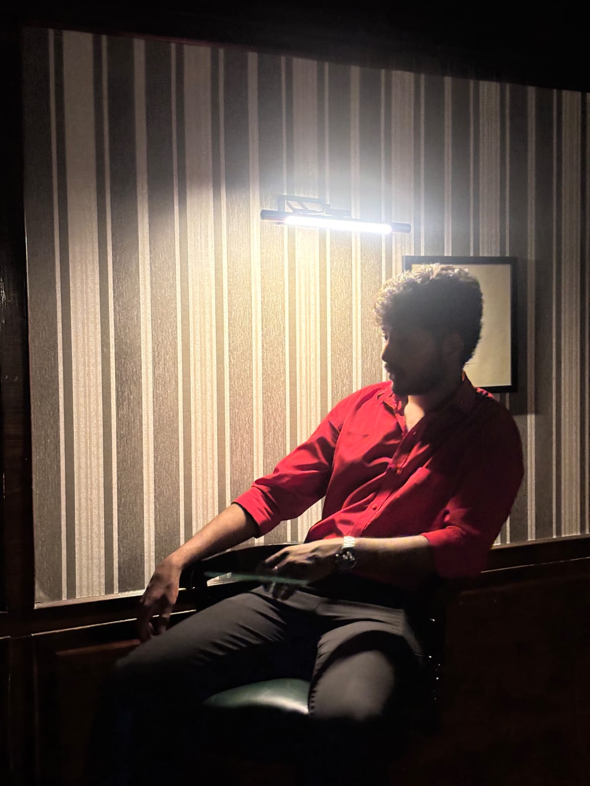

MISSION DOSSIER / 01
VISION X
PROBLEM SPACE
APPROACH
TOOLS / CONCEPTS
STATUS
INITIALISING BUILDER PROFILE
AI • SYSTEMS • HUMAN IMPACT
AI & DATA SCIENCE • BUILDER PROFILE 001
I’m Shashank Teja R — an AI & Data Science student turning ambitious ideas into intelligent prototypes across computer vision, fraud analytics, insurance technology, and agent governance.

01 / IDENTITY FILE
I’m pursuing a B.Tech in Artificial Intelligence and Data Science at SNS College of Engineering. I enjoy building practical AI prototypes that connect technical systems with real problems — from detecting suspicious patterns to understanding video feeds and making insurance information easier to compare.
My approach is experimental: understand the problem, build a working slice, test the assumptions, and improve it. I’m especially interested in responsible AI, product analytics, and systems that earn trust rather than simply look intelligent.
SNS College of Engineering
Product-minded engineering
Real problems. Clear evidence.
Résumé PDF included in this portfolio package.
02 / FIELD MISSIONS
Select a mission to open its dossier. Each card is an interactive entry point—not just a project thumbnail.
FEATURED ACHIEVEMENT / 2026
THE FLAGSHIP MISSION
A recognition milestone for building bold ideas at the intersection of AI and real-world perception.
IP note: Patent application reference: 202641076822 — Intellectual Property India. The application number is presented as a reference, not as independent confirmation of grant status. Add the official application record or publication link here when available.
03 / INTERACTIVE LAB
Choose a real-world challenge. Watch the system assemble a response path. This is a front-end demonstration of project thinking, not a live AI service.
A practical vision workflow starts by capturing input, detecting relevant objects, and surfacing observations for a human to review.
04 / TECH ARSENAL
05 / FIELD LOG
Explored coordinated AI-agent workflows for banking risk and fraud detection at the Bank of Maharashtra FinSpark Hackathon.
NIT Trichy Best Idea Award 2026 — featured as the flagship achievement on this portfolio.
Worked with insurance datasets, preprocessing, trend analysis, and business reporting workflows.
Anna University GENIO winner; KPRIET IDEAVIVE and BIT ELFUTURIX runner-up; LeetCode peer mentor.
FINAL TRANSMISSION
Have a hard problem, a bold idea, or a team looking for a curious builder? Send the signal.